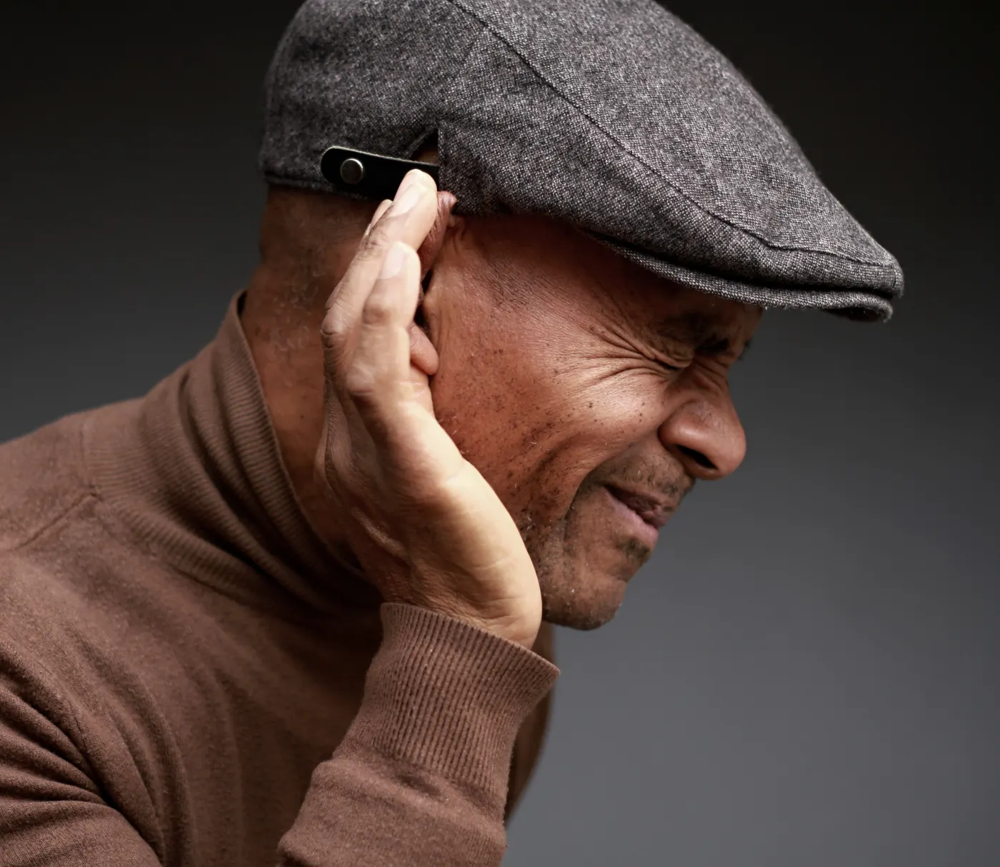

How to preserve and protect your hearing as you grow older
Have you ever reminisced about attending rock concerts in the '70s or '80s? Many of us fondly remember those loud, electrifying moments, but if you've been to a boy band concert in the '90s or 2000s, you know the volume—and the screams—can reach another level. Whether it's rock, pop, or power tools, loud noise exposure has lasting effects on our hearing health. Here's how you can protect your ears and enjoy better hearing as you age.

When does hearing loss begin?
Did you know that hearing changes start as early as 30? Hearing loss often creeps in so gradually that many don't notice until it significantly impacts their daily life. By age 65, one-third of people experience hearing loss, and over half of those older than 75 have difficulty hearing.
This age-related hearing loss, called presbycusis, typically affects both ears. However, it's not limited to older adults. Surprisingly, 10% of Americans aged 18 and older already experience some form of hearing loss.
What causes age-related hearing loss (presbycusis)?
While there have been studies to look at what changes we see in hearing solely due to age, most of us do not live in a community devoid of noise (although there are days I wish for that — anyone else?). This means there are many factors that play a role in how our hearing changes over time. We all have different noise exposure in our life, we each have unique life experiences, our genetics are different, and our health is different. All of these factors play a role in how our hearing will change as we age, so it's important to manage or control as many factors as we can.
Safeguarding your hearing
Since there are so many factors that can impact your hearing, the next logical question is: is there anything I can do to prevent it? We can't prevent changes that happen from Father Time, but we can prevent changes due to noise exposure. Protecting yourself from noise-induced hearing loss (NIHL) is crucial, regardless of your age. Exposure to loud noises can significantly impact your hearing health — and it's not just the volume of sound that matters but also how long you are in those environments. These damaging noises can come from various sources such as loud music, headphones used at high volumes, construction sites, fireworks, guns, power tools, and motorcycles.
As you age, it becomes even more important to safeguard your hearing. Here are some steps you can take:
- Avoid loud sounds: Be mindful of your surroundings and avoid environments where loud noises are prevalent, or take breaks if you find yourself in such situations.
- Reduce exposure: Again, it's not just level of sound but length of exposure too. Limit the amount of time you spend in environments with loud sounds. This could involve reducing the duration of activities like concerts, using power tools, or attending sporting events.
- Use protective gear: Wear earplugs or protective earmuffs when you anticipate exposure to loud noises. This is particularly important when engaging in activities such as mowing the lawn, attending concerts, or operating machinery. If you're like me and have small ear canals, the over-the-counter options can usually be uncomfortable. If you are around loud sounds frequently, I would consider investing in some custom hearing protection — this ensures accuracy of placement and comfort.
By taking these proactive measures, you can help preserve your hearing and enjoy a better quality of life as you age.
Safe listening tips
With the explosion of personal listening devices, there are some additional ways to reduce your risk of developing NIHL.
- Never listen at 100% volume. If there is someone in the room with you, and they can hear your music, it's too loud.
- Follow the 60:60 rule. Listen at 60% maximum volume for no longer than 60 minutes per day.
- Use the "smart volume" feature if your device has one to regulate the volume automatically.
- Keep the volume low even in noisy environments.
- Take periodic breaks for 15 minutes.
- You should be able to hear someone call your name.
Do what you can
There are many health conditions that can impact hearing like heart disease, diabetes, and smoking, so striving to live a healthy and active lifestyle can also lead to healthy hearing.
By taking these proactive measures, you can help preserve your hearing and enjoy a better quality of life as you age.
If you suspect you are having hearing issues, make an appointment with Nashville's Hearing & Communication Center. Call 615.678.8638 to schedule an appointment in Nashville.